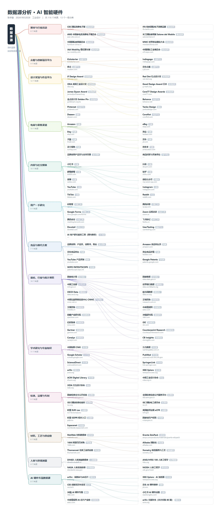
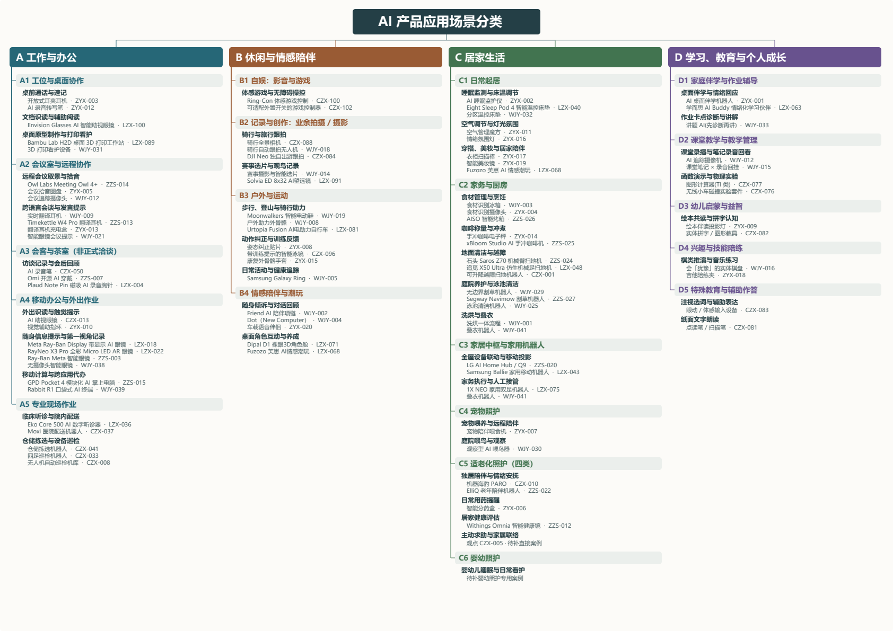

武汉科技大学 · 工业设计 · 设计思维
AI 智能硬件
跨场景调研
从 116 项数据源出发，把市面上能看到的 AI 硬件按场景拆开、按极端用户还原， 再回到一句判断：这轮硬件的机会落在哪里。
01数据来源
资料蓝图分 13 类，覆盖展会、众筹、电商、学术、法规、材料与人体数据。 右图是按获取渠道归类的全部来源。

02场景版图
4 个一级场景、21 个二级分类、44 个末级子场景。每个末级场景都对应一份极端用户分析。

03案例卡
每张卡只回答三件事：看到了什么、为什么会这样、它提示了什么解法。
04观点卡
从案例里提炼的判断，以及支撑它的场景拆解与设计机会点。
05极端用户分析
把场景里某一维度推到极致，看这类人真实会做什么。共 44 张，与末级场景一一对应。
06文献
围绕端侧算力、可穿戴形态、主动介入与隐私安全采集的 60 篇前沿文献。
| # | 标题 | 作者 | 年份 |
|---|